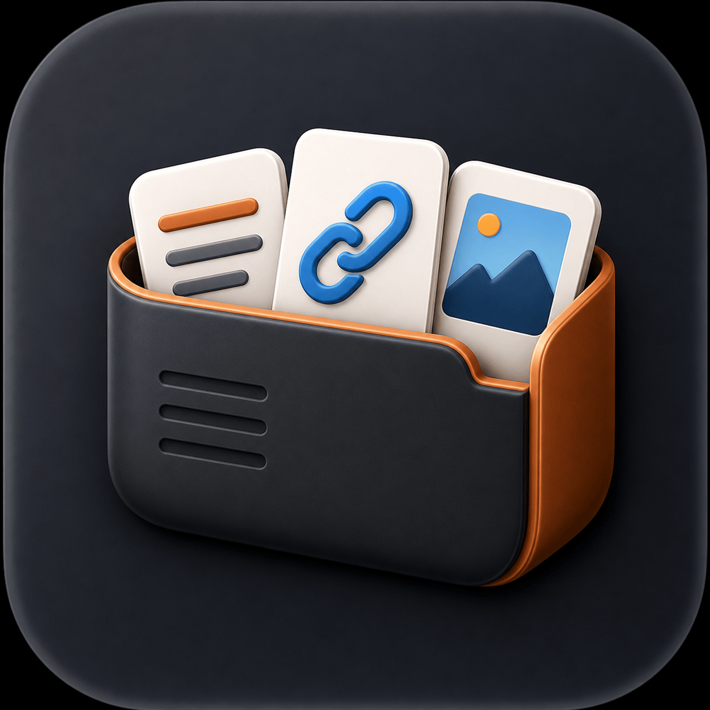
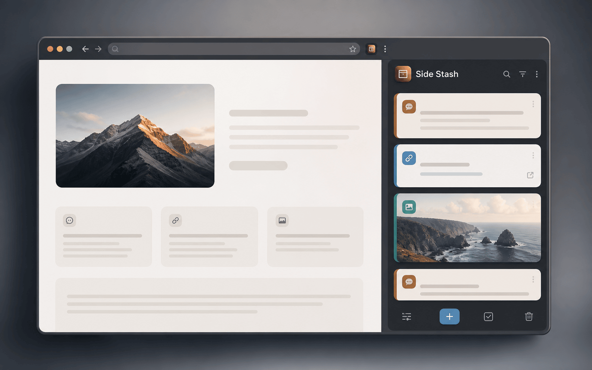
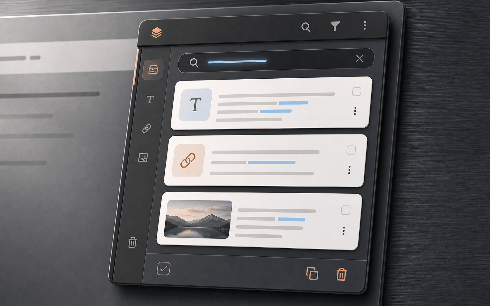
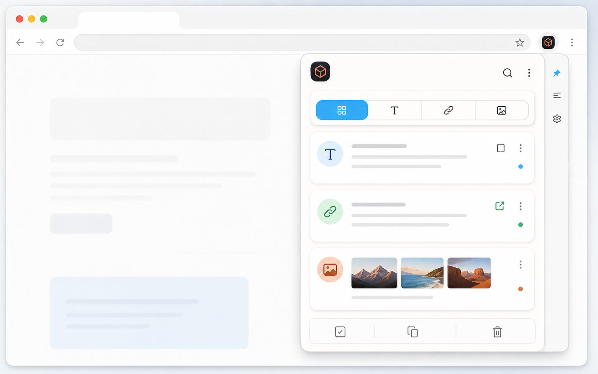
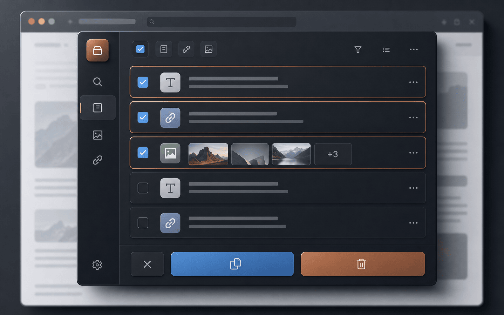

Right-click from any page.
Save selected text, a link, or an image without breaking your current tab.

Side Stash InstallRight-click text, links, or images. Side Stash keeps them local, searchable, and ready to copy.

Side Stash is built for the tiny things you do not want to lose while reading, researching, or collecting references.
Save selected text, a link, or an image without breaking your current tab.
Saved items stay grouped by type with source context and readable previews.
Filter your stash, copy a single item, or collect several items at once.
Your saved snippets live in Chrome storage on your device. There is no account, no backend, and no analytics pipeline.
chrome.storage.localThe interface focuses on the few states that matter: capture, search, filter, and bulk actions.



Add Side Stash to Chrome, pin it if you like, and start saving snippets from the right-click menu.